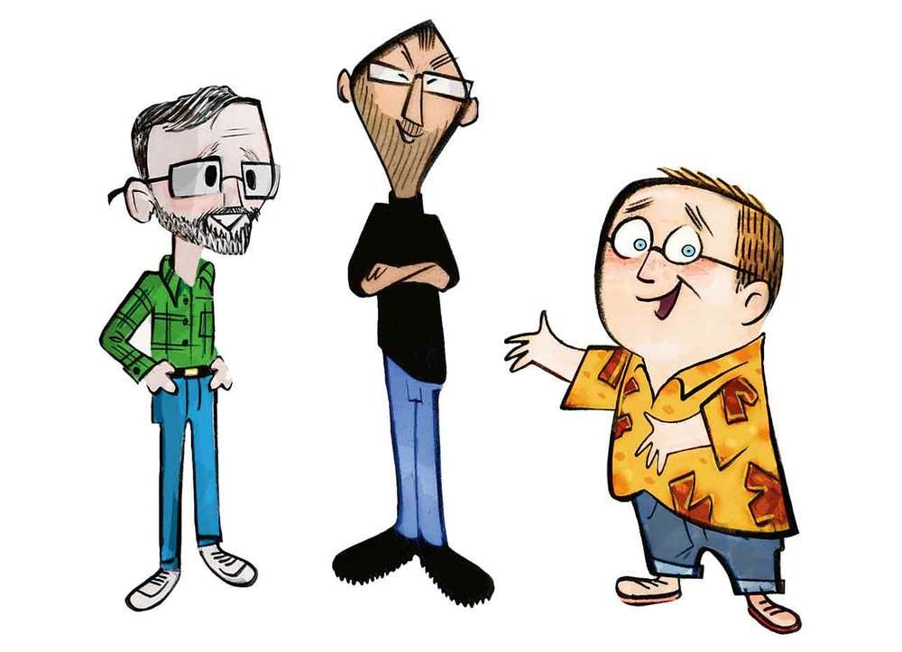

Pixar has a very fascinating history. It is quite complicated as well. Alexander Schure, founder of the New York Institute of Technology (NYIT), dreamed of making the world's first computer-animated film. In 1974, with several computer scientists, including Edwin (Ed) Catmull, he set out to do just that.
Together, these computer scientists formed the Computer Graphics Lab (CGL) at NYIT. One issue was that they lacked the expertise to animate, so they were recruited by George Lucas, the mastermind behind the Star Wars franchise, to work at LucasFilm as part of the Graphics Group there. George wanted from the newly established Group to create a digital film editing system, a digital sound editing system and a laser film printer. For the next few years during their stay at LucasFilm, the group pioneered many of the techniques used in Computer-generated (CG) animation.
One such technique was the Industrial Light and Magic, which was used in Star Trek: The Wrath of Khan (the Genesis Effect) and in Young Sherlock Holmes (the Stained Glass Knight). However, in 1983, after the release of The Last Jedi, the dropoff in revenue caused George Lucas to sell off his Graphics Group.
At the time, computers weren't powerful enough to render a fully computer-animated movie. In the meantime, the remaining employees of the Graphics Group formed the independent company we know now as Pixar. At first, they sold hardware such as the Pixar Image Computer. It was incredibly powerful for its time, being able to create 3D images from high resolution imagery. This system was originally sold to the government and to the medical industry. They produced the Renderman, a photorealistic 3D rendering software.
Unfortunately,despite being very inventive and useful, it never sold very well. The hardware division of the company everntually had to be sold off due to its lackluster performance, transferring 18 employees to another company.
History of Pixar
When Pixar first became independent, it was headed by Edwin Catmull as President and Alvy Ray Smith as Executive Vice President. Steve Jobs, after becoming fired by his own company Apple, showed interest in investing in Pixar. At first, George Lucas declined. After Lucas found out there were no other investors, he let Jobs invest 5 million dollars towards the company as capital. Later, Pixar found Jobs joining the board of directors as chairman.
During that period, Walt Disney Studios bought the Pixar Image Computer and custom software written by Pixar for their Computer Animation Production System (CAPS) project, to make the animating process easier. This would not be the end of Disney's involvement in Pixar's history.
After several waves of layoffs, Pixar managed to make the iconic deal with Disney for 26 million dollars to create three computer-animated feature films. Those movies were Toy Story, A Bug's Life and Toy Story 2.
John Lasseter, who now acts as chief creative officer at pixar, originally worked as one of the only people at Pixar during its early days who had experience with animating. He was previously fired by Disney after working a short time there and wanted to try his hand at animating digitally. He helped to spearhead the animation section of the company, helping Pixar to earn its status that it has today.
Ed Catmull is and was a computer scientist, as aforementioned and is now president of Pixar. He managed the computer graphics and video editing at LucasFilm and was Chief Technical Officer is Pixar's early days. He was integral to the rendering of the movies, especially Toy Story.
